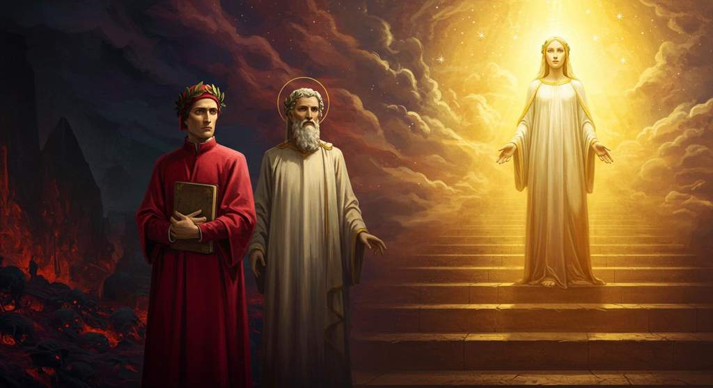

La Divina Commedia
Dante's Divine Comedy, translated from Italian to English and Japanese with Gemini 2.5 Pro
📦 Repository
The English and Japanese translations on this site are machine-generated by Gemini 2.5 Pro and have not been reviewed or corrected by a professional translator. Errors and mistranslations may be present; these pages are provided as-is for reference and study purposes. The illustrations are AI-generated with Gemini's image generation model. The original Italian text is in the public domain (from Project Gutenberg); the translations, summaries, illustrations, and other derived works in this repository are dedicated to the public domain under CC0 1.0.
Reading the Cantos
Each canto is shown as a line-by-line trilingual page: the original Italian alongside the English and Japanese translations, with an illustration at the top. The final canto of each canticle also shows a closing-scene illustration. Use the sidebar to jump to any canto.
Canticles


Each canticle also has a summary page with the canticle's title illustration and, for every canto, an English/Japanese side-by-side summary.